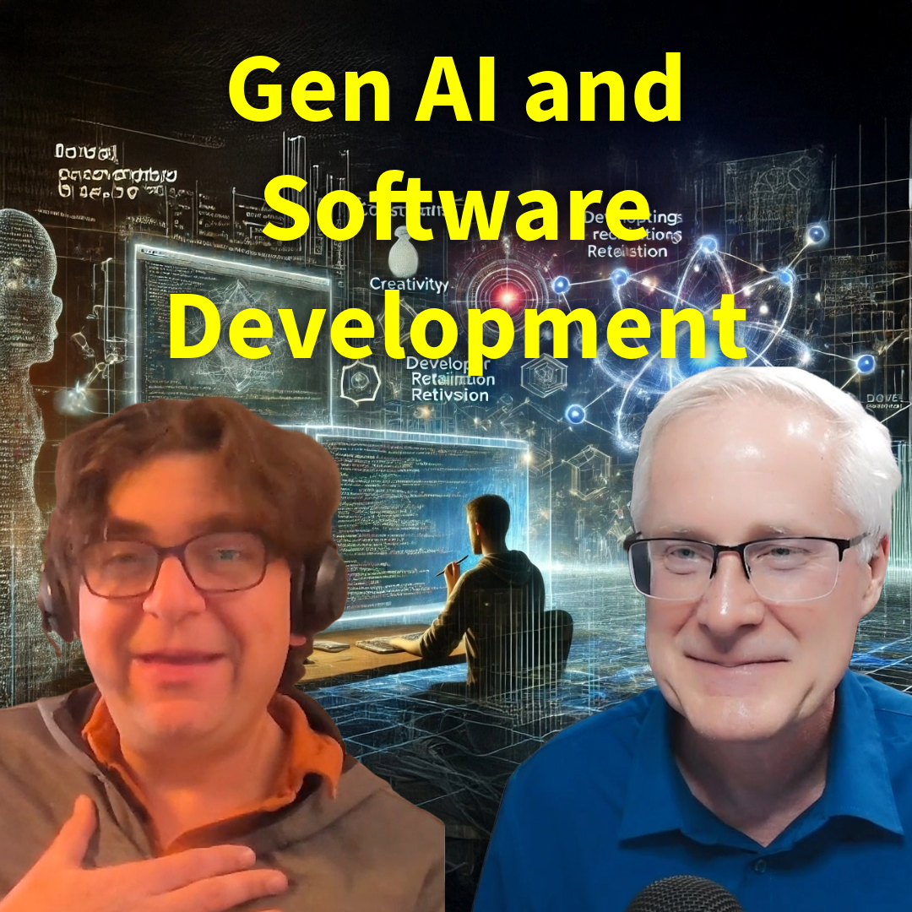

#250 The 3 Forces of Cultural Change: Agents, Keepers & Assassins Explained
Nesta conversa, Dr. Joel Shertok compartilha sua ampla experiência em engenharia química e transformação digital. Ele discute os desafios enfrentados na indústria de produção química, especialmente a perda de conhecimento tácito à medida que trabalha..
Assista Agora Ouça Agora

#249 Generative AI and the Evolution of Software Development
Neste episódio, o Dr. Darren entrevista Matt Van Itallie, que compartilha suas percepções sobre a evolução do desenvolvimento de software, o impacto da inteligência artificial generativa e a importância de entender a saúde do código. Ele discute o pa..
Assista Agora Ouça Agora